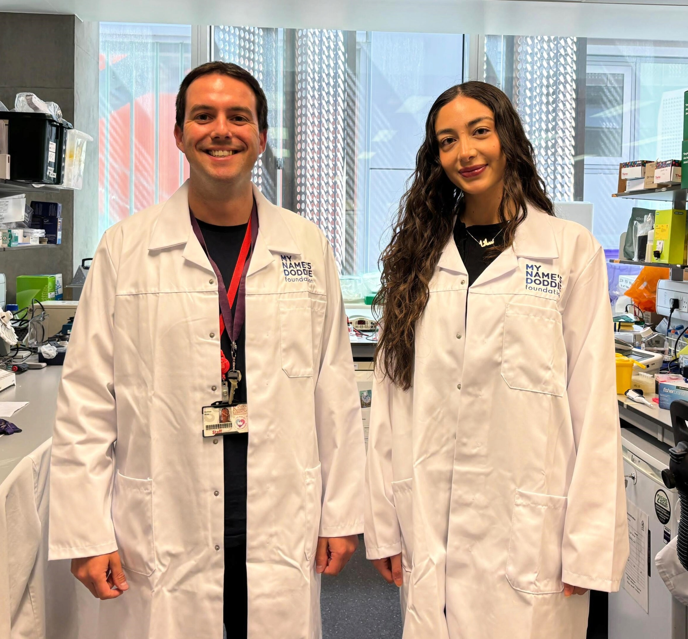

RNA-binding proteins in health and disease
Understanding how RNA-binding proteins shape neuronal health, and how their disruption contributes to disease.

People
White Lab is a growing research group based at King’s College London, bringing together RNA biology, neurodegeneration research, human stem-cell models and transcriptomics.

The lab is still in its early stages, which makes this an exciting time to build. Alongside the science itself, we care about creating a research environment that is thoughtful, collaborative, ambitious and welcoming.
We want the lab to be a place where good ideas can grow, where different kinds of expertise can meet, and where complex science can still be communicated clearly and openly.
Senior Research Fellow, King’s College London
Founder and Principal Investigator, White Lab Neuro
Matthew White is a Senior Research Fellow and fellowship-funded new principal investigator at King’s College London, where he leads White Lab Neuro. His research focuses on how RNA-binding proteins help maintain the health and function of human neurons, and what happens when those systems begin to fail.
Using human stem-cell-derived neurons, organoids and assembloids, alongside transcriptomic and molecular approaches, his work aims to understand early disease processes in neurodegeneration and related disorders of the nervous system. The lab’s research sits at the intersection of RNA biology, human disease modelling and translational discovery, with particular relevance to motor neurone disease, dementia and selected neurodevelopmental conditions.
White Lab is being built through fellowship and charity-funded support, with a strong emphasis on rigorous science, collaboration and communication that is meaningful both within and beyond academia.
Outside the lab, Matthew is also a father to a preschooler, which is excellent training in curiosity, resilience and functioning on incomplete sleep.
Understanding how RNA-binding proteins shape neuronal health, and how their disruption contributes to disease.
Investigating early disease mechanisms relevant to motor neurone disease, dementia and related disorders of the nervous system.
Using human model systems to study neuronal vulnerability and disease-relevant biology in experimentally tractable ways.
Defining molecular signatures of disease through RNA analysis, including changes in splicing and isoform usage.
White Lab is at an exciting early stage, and this page will expand as new team members join. Over time, we hope to build a research environment that combines rigorous science with supportive mentoring, shared curiosity and a clear sense of purpose.
The lab brings together interests in stem-cell biology, molecular neuroscience, RNA biology and transcriptomic analysis, with a strong value placed on collaboration, openness and thoughtful communication.
We are always pleased to hear from prospective students, collaborators and others whose interests overlap with the lab’s work.
Join / Contact